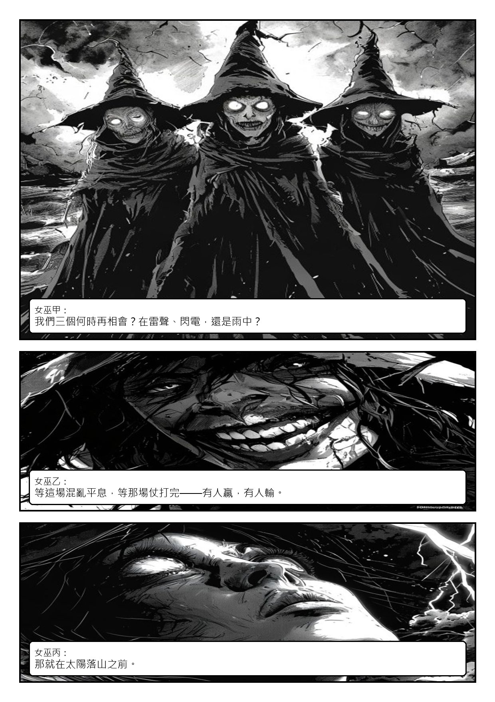
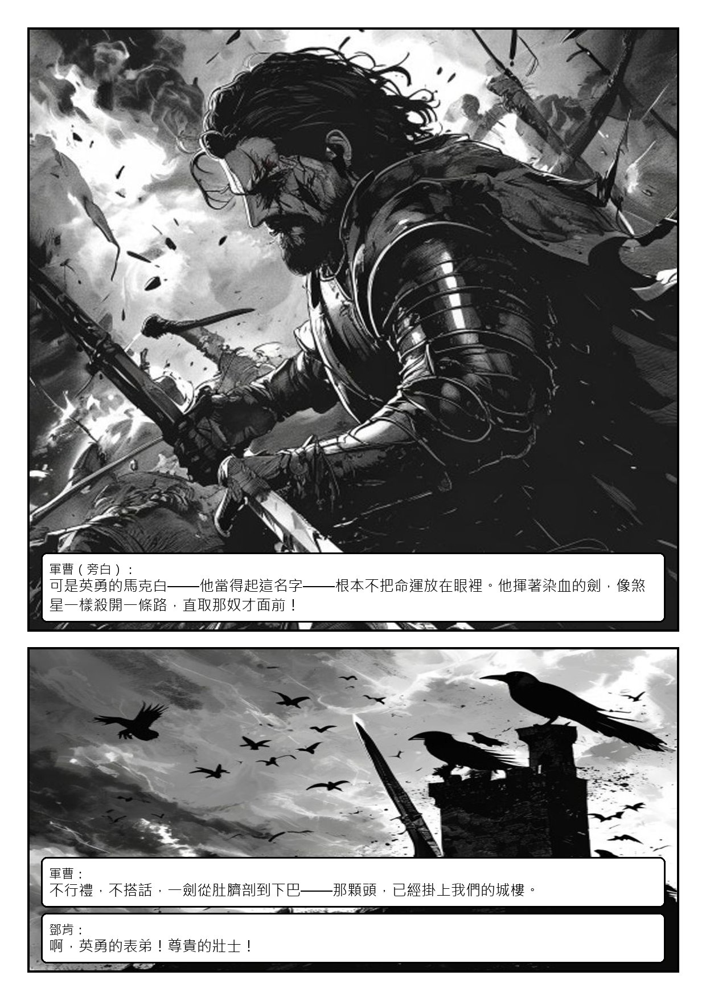
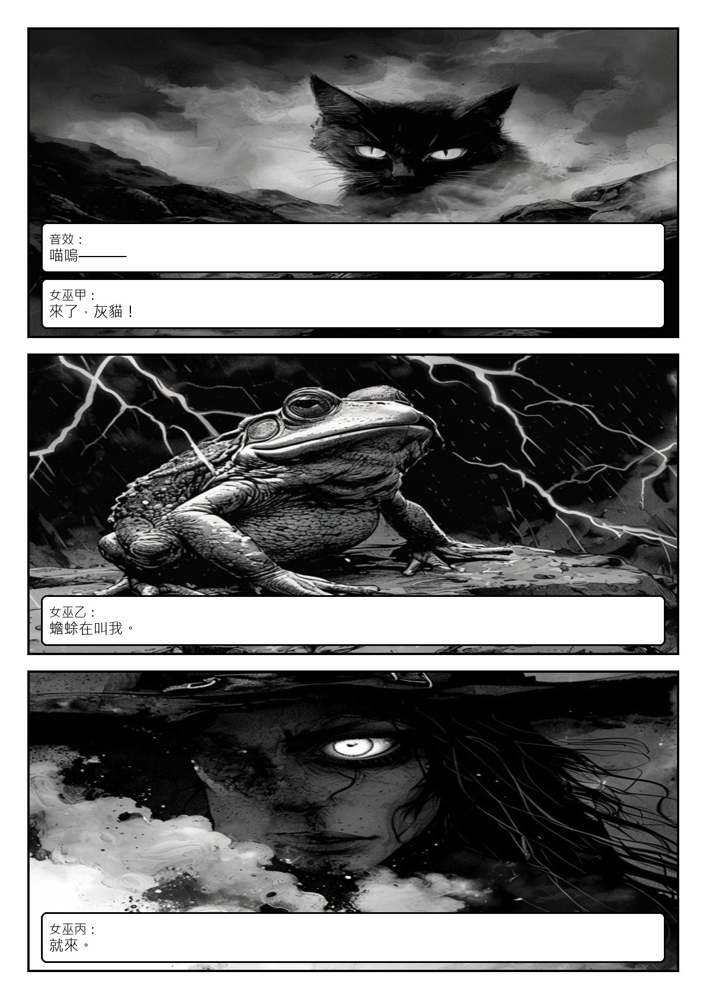
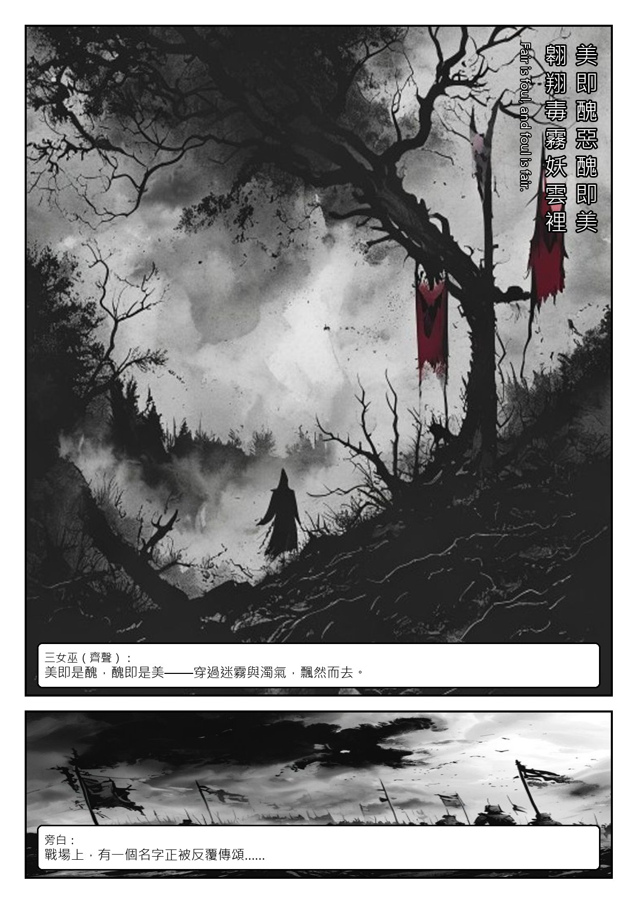

Act I · Scene I
荒野女巫A Desert Place. Thunder and Lightning.
❦
雷電交加的荒野，三女巫立下與馬克白的約。
本場人物女巫甲・獨眼／女巫乙・裂嘴／女巫丙・白瞳
首輪草稿・Pollinations 免費生圖——校構圖與對白用，角色定裝後會全面重生





Act I · Scene I
雷電交加的荒野，三女巫立下與馬克白的約。
本場人物女巫甲・獨眼／女巫乙・裂嘴／女巫丙・白瞳
首輪草稿・Pollinations 免費生圖——校構圖與對白用，角色定裝後會全面重生



